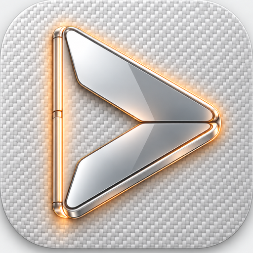

Plex, Jellyfin, Emby, network shares and the files on your phone, brought together in one place, with the poster, story and cast of every title.
View on the App StoreStop switching between apps. All your servers and folders show up together, searched all at once. The same film on three servers appears once.
Posters, synopsis, cast, director, runtime, languages, resolution, IMDb, Rotten Tomatoes and TMDB ratings, and the trailer, one tap away.
MKV, MP4, M4V and MOV, up to 4K, with HDR10, HLG and Dolby Vision. DTS and TrueHD sound is converted on the fly.
SRT, ASS, WebVTT, PGS and VobSub from the file, or found online in your language.
Download from your servers and watch with no signal. Continue watching where you stopped, on any device.
Trakt keeps your history and progress in sync, with a journey of what you watched and a calendar of new episodes.
Your servers, keys, settings and the shows you follow sync through iCloud. Reinstall or change phone and your library is already there. Your videos stay where they are, and passwords stay in the Keychain.